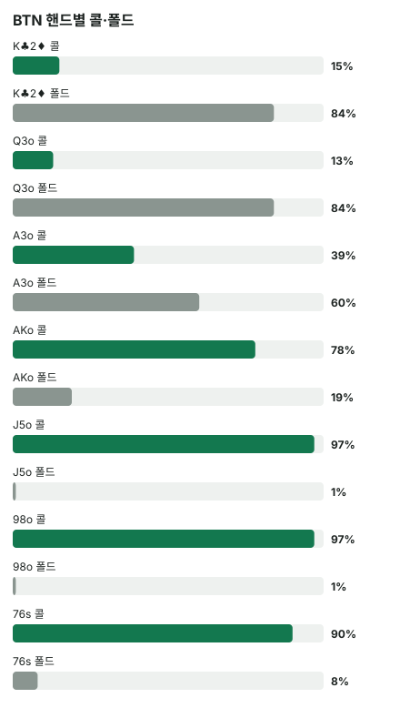

안녕하세요. E06에서 BTN의 플랍 c-bet을 BB가 접는 비율 vs 본전 폴드율로 읽었죠. 3/4팟 벳은 상대가 약 42.9% 접어 주면 본전이라는 것도요.
오늘은 자리를 바꿔요. BTN이 플랍에서 c-bet을 하지 않고 체크로 넘긴 뒤, 턴에서 BB가 먼저 벳하는 프로브예요. Hero는 BB의 7♠6♠이고, 솔버가 이 핸드로 왜 그렇게 자주 벳하는지 따라가 볼게요.
이 글에서 배울 것
- 프로브가 무엇이고, 솔버 표로 BB의 턴 첫 행동을 읽는 법
- BTN이 본전만큼 접어 주지 않는데도 7♠6♠가 자주 벳하는 이유: 체크할 때 남는 몫 vs 벳할 때 남는 몫
- BB 레인지에서 어떤 핸드는 벳하고 어떤 핸드는 체크하는지, 그 갈림길
오늘의 핸드 (헤즈업 기준)
헤즈업 100BB·빅앤티 싱글레이즈 팟(SRP)이에요.
레인지는 DB의 근사 레인지예요. E26·E04·E06의 플랍 값은 헤즈업 프리플랍 솔버 레인지로 새로 푼 값이지만, 턴 전략은 아직 근사 레인지 DB에만 있어요. 그래서 이 글은 플랍·턴 모두 근사 레인지 값으로 맞췄고, E06의 숫자와 바로 비교하지는 않아요.
Hero (BB)

프리플랍
BTN 2.5BB 오픈 → Hero 콜
플랍 · 팟 6BB


Hero 체크 → BTN 체크(이 보드에서 BTN의 체크는 약 33.3%)
턴 · 팟 6BB
Hero가 먼저 4.5BB(팟의 75%)를 벳할까, 체크할까?
결론부터 말할게요. 턴 카드 평균으로 솔버는 76s를 약 80% 벳(프로브)해요. 남은 베팅이 있어 실제 결과는 달라질 수 있어요. 이 80%는 턴 한 번의 선택 빈도이고, 리버 베팅이 남아 있어 이 벳 하나로 손익이 정해지지는 않아요.
이 DB의 턴 값은 나올 수 있는 턴 카드 전체의 평균이고, 핸드별 값은 클래스 평균(76s면 무늬가 같은 76 핸드 전체)이에요.
1단계. 프로브란
한 줄 정의
프로브 = 앞 스트리트에서 상대가 벳하지 않고 체크로 넘긴 뒤, 포지션 없는 쪽이 먼저 하는 벳이에요. 오늘은 플랍에서 BTN이 체크했으니, 턴에서 BB가 먼저 거는 벳이 프로브예요.
비유하면 잠겨 있지 않은 문을 두드려 보는 것이에요. 상대가 플랍에서 벳하지 않았으니 센 핸드가 덜 섞였을 수 있다고 보고 먼저 밀어 보는 거예요. 물론 일부러 체크한 센 핸드도 섞여 있을 수 있어요.
레인지 전체 빈도
이 지점(E26에서 배운 노드)의 BB 첫 행동이에요.
| BB 턴 첫 행동 | 체크 | 4.5BB | 올인 |
|---|---|---|---|
| 레인지 전체 | 약 55.3% | 약 43.2% | 약 1.5% |
| 76s | 18% | 80% | 1% |
| 76o | 16% | 83% | 1% |
'몫'이라는 말
이 글에서 몫 = 그 행동을 골랐을 때 평균적으로 가져오는 칩이에요. 비유하면 같은 장사를 여러 번 했을 때의 평균 수입이에요. 체크 몫·벳 몫을 비교해 더 큰 쪽을 고른다고 보면 돼요.
레인지 전체로는 체크가 더 많아요. 그런데 76은 다섯 번 중 네 번꼴로 벳해요. 무늬가 다른 76o도 83%로 비슷하니, 같은 무늬보다 76이라는 숫자 조합이 이유라고 읽을 수 있어요.
체크가 돌아왔다는 것의 뜻
플랍에서 BTN이 체크한 핸드가 무엇인지 보면, 왜 BB가 먼저 벳할 수 있는지 보여요.
| BTN 플랍 핸드 | 체크 | 이 보드에서 |
|---|---|---|
| A6s | 88% | A 하이 |
| 22 | 81% | 보드 아래 포켓페어 |
| 98o | 78% | 8 세컨드 페어 |
| J2o | 67% | 약한 키커 탑페어 |
| AKo | 55% | A 하이(높은 키커) |
| AA · 88 · AJo · KJo | 0% | 오버페어 · 셋 · 좋은 탑페어 |
BTN은 셋·좋은 탑페어·오버페어를 플랍에서 한 번도 체크하지 않았어요. 체크로 넘어온 레인지는 쇼다운 몫이 어중간한 핸드가 중심이에요. 그래서 BB는 턴에 센 핸드를 덜 만나는 자리에서 먼저 벳할 수 있어요.
2단계. BTN은 얼마나 접어 줄까
본전 폴드율
본전 폴드율 = 4.5(벳) ÷ (6(팟) + 4.5(벳)) = 약 42.9%
E06에서 본 3/4팟 기준 그대로예요. 콜 받으면 늘 진다고 칠 때, BTN이 열 번 중 네 번 넘게 접어 줘야 본전이에요.
실제 BTN 대응
BB의 4.5BB 프로브에 BTN은 콜 약 63.4%, 올인 레이즈 약 3.1%, 폴드 약 33.5%예요.
폴드가 본전 42.9%에 못 미쳐요. 순수 블러프(콜 받으면 이길 길이 거의 없는 벳)로는 이득이 어렵다는 뜻이에요.
누가 접고 누가 버티나
| BTN 핸드 | 콜 | 폴드 | 이 보드에서 |
|---|---|---|---|
| K♣2♦ 같은 K2o | 15% | 84% | K 하이 |
| Q3o | 13% | 84% | Q 하이 |
| A3o | 39% | 60% | A 하이 |
| AKo | 78% | 19% | A 하이(높은 키커) |
| J5o | 97% | 1% | J 탑페어 |
| 98o | 97% | 1% | 8 세컨드 페어 |
| 76s | 90% | 8% | 5를 기다리는 드로우 |

이게 무슨 뜻이냐면, BTN은 드로우 없는 K·Q 하이는 거의 다 접고, 페어는 거의 다 버텨요. A 하이는 키커에 따라 반쯤 갈려요. 그러니 BB의 벳은 "BTN의 약한 하이카드를 접게 하는 몫"과 "버티는 페어·드로우를 상대로 남는 몫"으로 나뉘어요. 드물게 BTN이 올인 레이즈(약 3.1%)로 받으면 7 하이 드로우는 접어야 해서, 그만큼 벳의 몫이 조금 깎여요.
3단계. 그런데 왜 7♠6♠는 자주 칠까?
체크하면 남는 몫이 작아요
7♠6♠는 지금 7 하이예요. BTN의 K·Q 하이에도 지는 경우가 많아 쇼다운까지 가도 이길 일이 드물어요. 체크해서 가져갈 몫이 작으니, 벳으로 접게 만드는 몫이 상대적으로 커 보여요.
콜 받아도 남는 몫이 있어요
7♠6♠는 플랍에서 이미 5를 기다리는 드로우(거트샷)예요. 턴 카드에 따라 이렇게 바뀌어요.
- 5: 4-5-6-7-8 스트레이트 완성 → 밸류 벳
- 9: 6-7-8-9가 되어 5나 T를 기다리는 양쪽 드로우
- 7·6: 페어
- 스페이드: J♠와 함께 플러시 드로우도 생김
- 나머지 카드: 거트샷 그대로(리버에서 5 한 장을 기다림)
80%는 이 경우가 모두 섞인 평균이에요. 어떤 턴이든 5를 기다리는 길은 리버까지 남아서, 콜을 받아도 맞을 몫이 있어요. 순수 블러프가 아니라 세미블러프(A22)예요.
둘을 합치면
벳의 몫 = BTN이 접을 때(약 33.5%) 팟을 가져오는 몫 + 콜 받을 때 드로우로 남는 몫이에요. 접어 주는 비율이 본전에 못 미쳐도, 콜 받을 때 드로우로 남는 몫이 모자란 만큼을 채우면 체크보다 나아질 수 있어요.
반대로 체크의 몫은 7 하이의 작은 쇼다운 몫과, BTN도 체크하면 리버를 공짜로 보는 몫이에요. 그런데 BB가 체크하면 BTN이 벳할 수 있고, 그때 7 하이 거트샷은 드로우를 끝까지 못 보고 접어야 할 수도 있어요. 그래서 76은 벳 쪽으로 기울어요.
왜 그럴까: 벳은 "더 나쁜 핸드를 접게, 더 좋은 핸드에 버티게" 해요
BB 레인지 안에서 갈리는 곳
| BB 핸드 | 벳 | 체크 | 이 보드에서 |
|---|---|---|---|
| 75s | 84% | 14% | 거트샷(6) |
| 97o | 81% | 17% | 거트샷(T) |
| T7o | 78% | 21% | 거트샷(9) |
| J5o | 73% | 26% | 탑페어 |
| JTo | 70% | 28% | 탑페어 |
| T8o | 51% | 48% | 세컨드 페어 |
| A4o | 51% | 48% | 바텀 페어 |
| A5o | 24% | 74% | A 하이 |
| A3o | 17% | 81% | A 하이 |
| 22 | 14% | 85% | 보드 아래 포켓페어 |
| K3o | 11% | 87% | K 하이 |
위쪽: 드로우와 탑페어
드로우(75·97·T7·76)는 오늘 7♠6♠와 같은 이유로 벳해요. 체크 몫이 작고, 콜 받아도 남는 몫이 있어요.
탑페어(J5·JT)는 이유가 달라요. BTN의 8 페어·4 페어·A 하이 같은 더 약한 핸드가 콜해 줘서 벳으로 돈을 더 받는 몫이 커요.
아래쪽: A 하이와 작은 페어
A3o·A5o·22는 체크가 많아요. 이 핸드들은 BTN의 K·Q 하이를 이미 이기고 있어요. 그런데 벳하면 그 K·Q 하이는 접고, 버티는 건 BB를 이기는 페어예요.
즉 이기는 상대는 쫓아내고 지는 상대만 남기는 벳이 돼요. 그래서 체크로 쇼다운 몫을 지키는 쪽으로 기울어요. K3o는 쇼다운 몫도 작지만 드로우도 없어 체크가 가장 많아요.
이게 무슨 뜻이냐면
프로브를 고르는 기준은 "센 핸드냐"가 아니라 "체크할 때보다 벳할 때 남는 몫이 큰가"예요. 드로우와 탑페어는 벳 쪽, 쇼다운 몫만 있는 A 하이는 체크 쪽이에요. 솔버가 섞은 행동의 정확한 이유는 요약에 없으니, 이 표는 그 방향으로 읽을 수 있다는 뜻이에요.
자주 하는 실수
실수 1. "BTN이 체크했으니 약하다, 무조건 프로브" BTN 체크 레인지에 셋·좋은 탑페어가 없다는 건 맞아요. 하지만 98o·22 같은 페어는 섞여 있고, 이들은 벳에 거의 다 버텨요. BB 레인지 전체로도 체크가 약 55.3%로 더 많아요. 상대 레인지가 약해진 것과, 내 핸드로 벳하는 게 나은 것은 따로 따져야 해요.
실수 2. "본전 폴드율보다 덜 접으니 프로브는 손해" 42.9%는 콜 받으면 늘 진다고 칠 때의 기준이에요. 이걸 모든 벳에 대면 탑페어 밸류 벳까지 "손해"로 보게 돼요. 본전 폴드율은 순수 블러프에만 쓰는 잣대이고, 밸류·세미블러프는 콜 받을 때 몫까지 넣어야 해요.
실수 3. "센 핸드일수록 더 자주 벳" 이 보드에서 BB의 4·4 셋은 43%만 벳하고 55%는 체크해요. 탑페어 J5o(73%)보다도 적어요. 왜 섞는지는 요약에 없지만, 오늘 틀로 읽으면 셋은 체크해도 BTN이 벳해 줄 때 받을 몫이 있고, 벳하면 K·Q 하이가 접어 버려 받을 몫이 줄 수 있어요. 그러니 센 핸드일수록 "벳 몫과 체크 몫 중 어디서 더 받나"로 생각하세요.
"프로브는 블러프예요, 밸류예요?"
좋은 질문이에요. 둘 다예요. 오늘 표에서 벳 쪽 위에는 드로우(세미블러프)와 탑페어(밸류)가 함께 있어요.
같은 4.5BB 벳 안에 두 종류가 섞여 있으니, BTN은 콜할 때 어느 쪽인지 알기 어려워요. 한쪽만 벳하면 BTN이 대응하기 쉬워져요.
숫자가 뒤집히는 지점
기준은 그 핸드의 벳 몫이 체크 몫보다 큰지예요. 76s라면 턴이 아무것도 더해 주지 않아 리버 한 장에 거트샷만 남을 때 콜 받을 때 몫이 가장 작아져, 체크 쪽으로 기울 수 있어요. 오늘 80%는 그런 턴까지 섞인 평균이에요.
선생님의 한마디
상대가 체크로 넘긴 턴에서 이 순서로 봐요.
- 상대가 플랍에서 체크한 레인지에 센 핸드가 빠졌는지 먼저 떠올리기
- 턴 카드가 내 핸드를 바꿨는지(드로우 완성·새 드로우·페어) 확인하기
- 내 핸드를 드로우 / 탑페어 / 쇼다운 몫만 있는 핸드 / 아무것도 없는 핸드로 나눠 벳·체크 정하기
연습 문제 (같은 라인, 보드만 바꿈)
본전 폴드율은 홀덤학습 팟 오즈 Lv.5(블러프 본전)로 연습할 수 있어요. 사이트의 헤즈업 솔버 조회는 대표 보드로 보여 줘 숫자가 다를 수 있어요.
문제 1. 플랍 8♠ 6♥ 5♦, 같은 체크-체크 뒤 턴에서 솔버는 Q7o를 84%, A8o를 67%, 33을 12% 프로브해요. 세 핸드가 플랍에서 각각 무엇인지 적고, 오늘의 네 갈래(드로우 / 탑페어 / 쇼다운 몫만 / 아무것도 없음) 중 어디에 들어가는지로 빈도 차이를 설명해 보세요.
정답 보기
Q7o: 7이 8·6·5와 이어져 4나 9가 오면 스트레이트인 양쪽 드로우예요. Q 하이라 체크 몫은 작고 콜 받아도 남는 몫이 커서 가장 자주 벳해요. A8o: 8이 보드 맨 위 카드라 탑페어예요. 더 약한 페어와 드로우가 콜해 줘서 밸류로 벳하는 몫이 있어요. 다만 이 연결된 보드에서는 BTN의 스트레이트·투페어도 섞여 있어 드로우만큼 자주 치지는 않아요. 33: 보드 아래 포켓페어라 쇼다운 몫만 있어요. 벳하면 이기던 하이카드는 접고 지는 페어만 버티니 체크 쪽이에요.
문제 2. A♠ K♥ 7♦에서 같은 라인이면 BB 레인지 전체 프로브는 약 31%, K9o는 45%예요. J♠ 8♥ 4♦에서 K9o는 31%였어요. 왜 A♠ K♥ 7♦에서 더 자주 칠까요?
정답 보기
A♠ K♥ 7♦에서 K9o는 K 페어(세컨드 페어)예요. 벳하면 더 약한 7 페어나 T를 기다리는 QJ 같은 드로우가 콜해 줘서 벳으로 받는 몫이 생겨요. 그래서 이 보드 레인지 평균(약 31%)보다 자주 쳐요. J♠ 8♥ 4♦에서 K9o는 K 하이라 BTN의 K·Q 하이 일부는 이기지만, 벳하면 그 핸드가 접고 페어만 버텨요. 드로우도 없어 콜 받을 때 몫이 작으니 체크 쪽(67%)으로 기울어요. 또 A♠K♥7♦에서도 BTN의 A x에는 지니, 45%는 '자주'이지 '늘'은 아니에요.
핵심 정리
- 프로브 = 상대가 앞 스트리트를 체크로 넘긴 뒤, 포지션 없는 쪽이 먼저 하는 벳
- 벳 판단은 접게 하는 몫 + 콜 받을 때 남는 몫을 체크할 때 남는 몫과 비교해요
- 상대가 본전 폴드율만큼 접지 않아도, 드로우처럼 콜 받아도 맞을 몫이 있으면 벳이 나을 수 있어요
- 쇼다운 몫만 있는 핸드는 벳하면 이기는 상대가 접고 지는 상대만 남아 체크로 기울어요
정리하며
오늘은 헤즈업 SRP J♠8♥4♦에서 플랍 체크-체크 뒤 BB 7♠6♠의 턴 프로브를 봤어요.
BTN은 4.5BB 벳에 약 33.5%만 접어 본전 42.9%에 못 미쳤지만, 7♠6♠는 7 하이라 체크 몫이 작고 5를 기다리는 드로우라 콜 받아도 몫이 남아서 약 80% 벳했어요. 같은 표에서 탑페어는 밸류로 벳하고, A 하이는 쇼다운 몫을 지키려고 체크했죠.
다음 글 E20에서는 리버로 가서, 상대 벳에 블로커를 들고 레이즈 블러프하는 판을 봐요. 오늘은 먼저 벳하는 쪽이었다면, 다음 글은 상대 벳 위에 다시 거는 쪽이에요.
AI 작성 · 헤즈업 솔버 DB 기준(6맥스 아님) · 빅앤티 · 100BB 싱글레이즈 · 프리플랍 레인지는 근사 · 턴 값은 턴 카드 전체 평균 · 핸드별은 클래스 평균 정수 % · 이번 한 번의 결정 기준